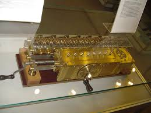
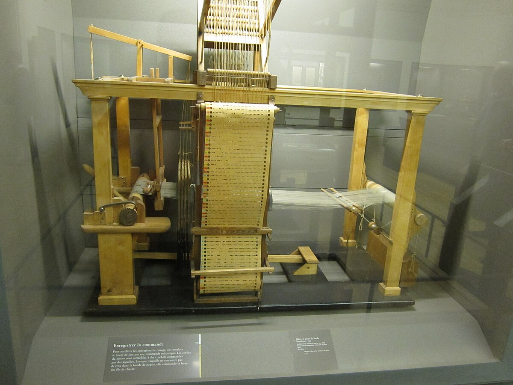
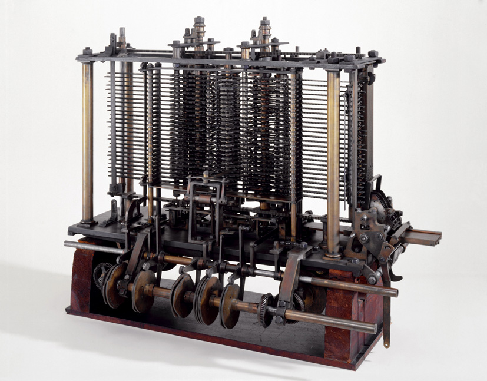
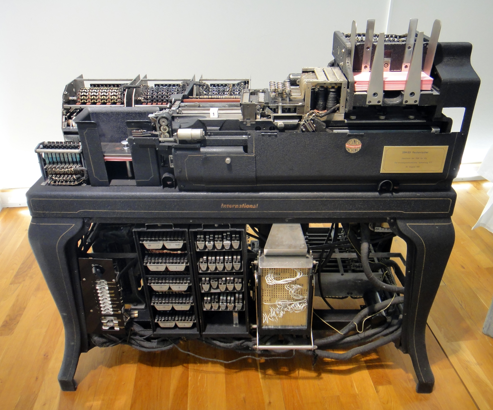
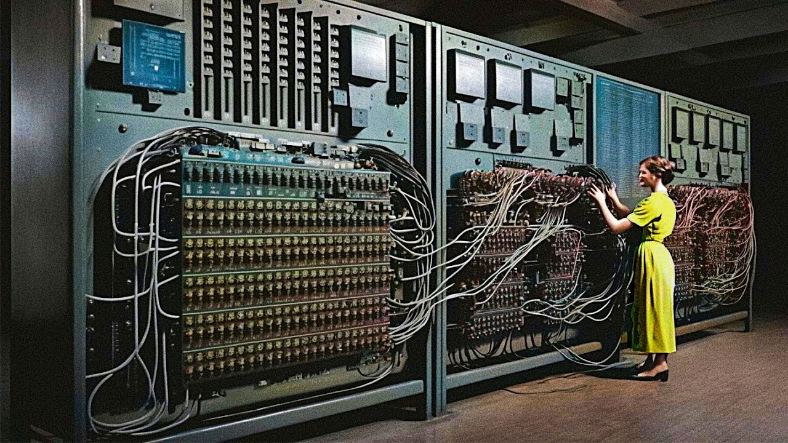
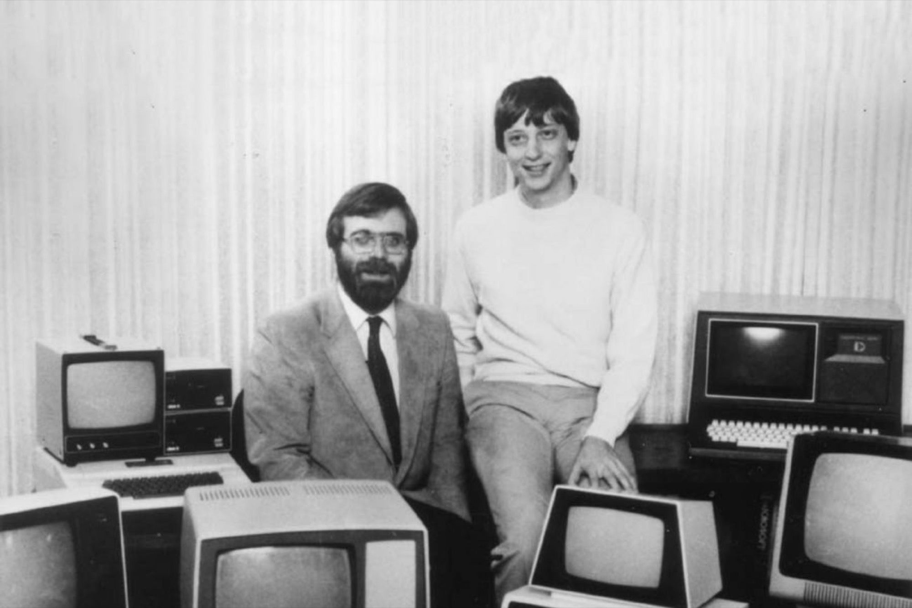

Blaise Pasqual construit la Pasqualine, le premier ordinateur.
Invention de la calculatrice par Gottfried Leibniz.

Basile Bouchon, un Lyonnais, met au point le premier système
de programmation d'un métier à tisser

Charles Babbage crée la machine Anaclitique, c'est-à-dire un calculateur mécanique automatique.

Une version plus développée de la machine à calculer est créée.
IBM lance L'IBM 601, une machine à carte perforée.

Les premiers ordinateurs sont mis en opération.
La création du premier ordinateur programmable par Alan Mathison Turing.

le premier ordinateur moderne est crée:
l’ENIAC (electronic numerical integrator and computer) par Presper
Eckert et John William Mauchly.
L'IBM 701 lancée par IBM. Seconde gen (1956), troisème gen (1963), quatrième gen (1971) après l'invention du microprocesseur par Ted Hoff et Federico Faggin.
Les ordinateurs deviennent de plus en plus compactes (Microsoft en 1975 et Apple en 1976).

Invention du premier ordinateur portable (L'Osbourne 1) par Adam Osborne.